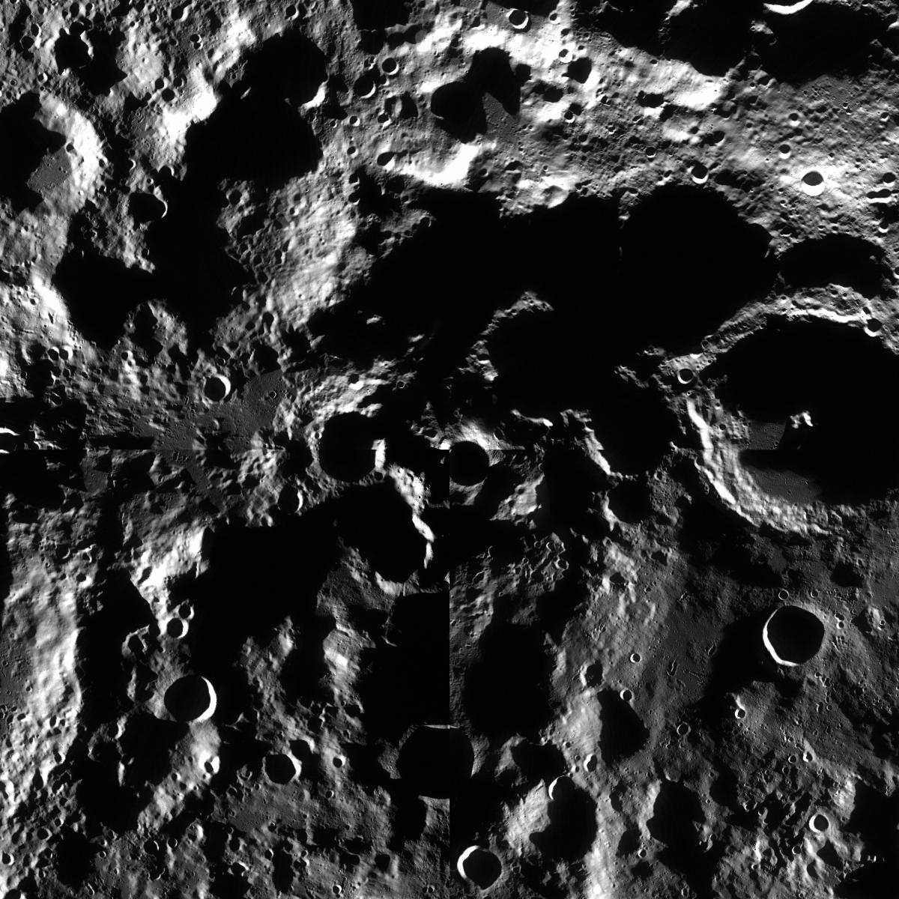

NASA Space Apps Challenge 2026 · Team_of_AEers
Lunar Landing
Navigator
Where to land depends on when you land.
Daylit side: where the Sun is up on Earth right now
NASA Space Apps Challenge 2026 · Team_of_AEers
Where to land depends on when you land.
Daylit side: where the Sun is up on Earth right now

II · Before launch
At the Moon's south pole the Sun and Earth skim the horizon. A ridge can hide them for days, so the same site can be perfect one week and dark the next.


III · Lunar south pole
South-pole map: NASA/GSFC/Arizona State University, LROC WAC mosaic via NASA Moon Trek · Sites: NASA Artemis III candidate regions · Results: NASA LRO LOLA terrain, checked against JPL Horizons · Stars: real positions, HYG catalogue